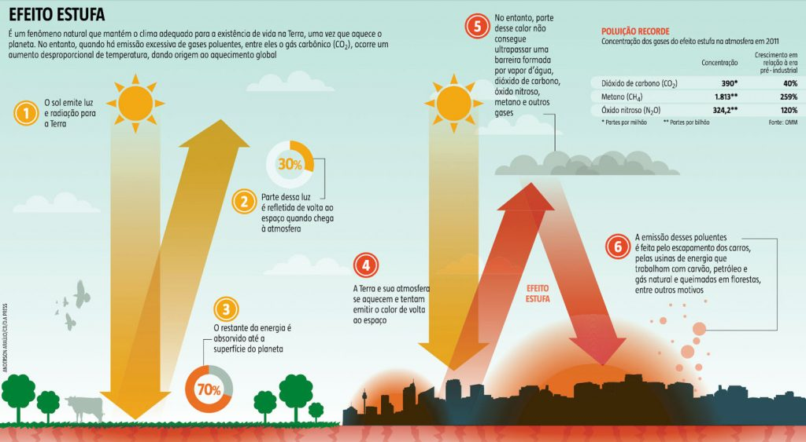

A busca por formas de diminuir a emissão de carbono na atmosfera
do planeta é constante nos dias atuais.
O planeta vem sendo afetado gravemente por essa emissão exagerada de carbono
desde a Revolução Industrial, evento esse que foi marcado principal mente pelo inicio
do uso intensivo de combustíveis fósseis como carvão e petróleo.
O aumento intensivo do uso de energia baseada nesses combustíveis como a queima de carvão ou gasolina
libera grandes quantidades dióxido de carbono na atmosfera.
Demonstração de o que é o efeito estufa

A Mobilidade Urbana também contribui para a emissão de gases do Efeito Estufa,
pois a queima de gasolina ou álcool que faz o motor dos automóveis funcionarem
libera muito dióxido de carbono no atmosfera diariamente.
Porém há meios para diminuir o impacto do transporte urbano no meio ambiente através da Mobilidade Urbana Sustentável.
Confira alguns abaixo:
- Transporte Público Eficiente
Aumentar a circulação de transporte público
e melhorar a tecnologias nos ônibus das empresas.
Isso já ajudaria bastante, pois não tria necessidade
de possuir um veiculo particular para se transportar
pelos cantos. Assim diminuindo a emissão de carbono por pessoa,
já que um ônibus sozinho carrega mais pessoas do que vários carros.
- Uso de Biocombustíveis e Combustíveis Renováveis
Biocombustíveis são derivados de biomassa renovável que
podem substituir, parcial ou totalmente, combustíveis derivados de
petróleo e gás natural em motores a combustão. O que é biomassa?
Biomassa é todo o aglomerado de resíduos de origem animal ou vegetal utilizado
na geração de energia, que vem de fontes como vegetais lenhosos,
cultivo agrícola e resíduos urbanos e industriais.
- Uso de Carros Elétricos
Carros elétricos também se enquadram como forma de diminuir
a emissão de carbono na atmosfera, pois são movidos inteiramente
por energia elétrica sem a queima de combustíveis fósseis,
assim sendo uma forma de Mobilidade Urbana Sustentável.